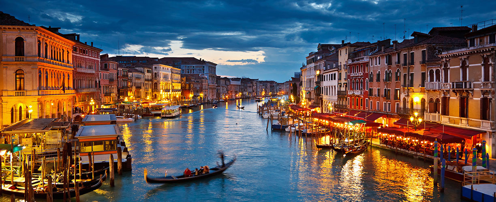

Introduction
Italy (the Italian Republic) is a unitary parliamentary republic in Europe.
It is located at the heart of the Mediterranean Sea.
Italy shares open borders with France, Switzerland, Austria, Slovenia, San Marino and Vatican City.
It does not have a largely temperature seasonal differentiation and Mediterrean climate.
Its population is of around 61 million inhabitants.

T
5 Facts About Italy:
- The Ponte Veccio Bridge over the River Arno in Florence was the only bridge left standing after the bombings of WW2. It was rumoured that Hitler spread the brigde because he thought it was too beautiful to destroy!
- You can play a live human chess game in Marostica in September, once every two years, in a tradition that is hundreds of years old. the town's main piazza is a giant chessboard!
- One of the most famous scenes from the Frescoes by Michelangelo in the Sistine Chapel in Rome isThe Creation Of Adam.Some experts believe today that this scene is also meant to look like the outline of the human brain!
- Armani, Vercachi, Gucci and Prada are all Italian fashion brands. Italy is also known for its fast and furious car makers such as Ferrari and Lamborghini
- Leonardo Da Vinci, Galileo Galilei, Christopher Columbus, Leonardo Fibonacci, Enzo Ferrari and Guglielmo Marconi are some of the famous people born in Italy.